Last updated: 2021-02-04
Checks:
Knit directory: mf/
This reproducible R Markdown analysis was created with workflowr (version 1.6.2). The Checks tab describes the reproducibility checks that were applied when the results were created. The Past versions tab lists the development history.
Great! Since the R Markdown file has been committed to the Git repository, you know the exact version of the code that produced these results.
Great job! The global environment was empty. Objects defined in the global environment can affect the analysis in your R Markdown file in unknown ways. For reproduciblity it’s best to always run the code in an empty environment.
The command set.seed(20201010) was run prior to running the code in the R Markdown file. Setting a seed ensures that any results that rely on randomness, e.g. subsampling or permutations, are reproducible.
Nice! There were no cached chunks for this analysis, so you can be confident that you successfully produced the results during this run.
Great job! Using relative paths to the files within your workflowr project makes it easier to run your code on other machines.
Great! You are using Git for version control. Tracking code development and connecting the code version to the results is critical for reproducibility.
The results in this page were generated with repository version c5a625b . See the Past versions tab to see a history of the changes made to the R Markdown and HTML files.
Note that you need to be careful to ensure that all relevant files for the analysis have been committed to Git prior to generating the results (you can use wflow_publish or wflow_git_commit). workflowr only checks the R Markdown file, but you know if there are other scripts or data files that it depends on. Below is the status of the Git repository when the results were generated:
Ignored files:
Ignored: .Rhistory
Ignored: .Rproj.user/
Ignored: analysis/.Rhistory
Untracked files:
Untracked: analysis/bingham.Rmd
Untracked: analysis/bingham_constant.Rmd
Untracked: analysis/demo3_toy.Rmd
Untracked: analysis/flip_correlation.Rmd
Untracked: analysis/flipping_pdf.Rmd
Untracked: analysis/infinitefactor_toy.Rmd
Untracked: analysis/model_exp_prior_v20201110m.Rmd
Untracked: analysis/model_invgam_prior.Rmd
Untracked: analysis/multiplicative.Rmd
Untracked: analysis/sliding_correlation.Rmd
Untracked: analysis/sliding_pdf.Rmd
Untracked: analysis/temp.Rmd
Untracked: code/code_wflow_publish.R
Untracked: code/model_exp_v20201110.R
Untracked: data/eigvals.rds
Untracked: data/metro_results.txt
Untracked: figure/
Untracked: output/Likelihood.gif
Untracked: writing/
Unstaged changes:
Deleted: analysis/ChoosingW.Rmd
Deleted: analysis/concentration.Rmd
Modified: analysis/model_exp_prior.Rmd
Note that any generated files, e.g. HTML, png, CSS, etc., are not included in this status report because it is ok for generated content to have uncommitted changes.
These are the previous versions of the repository in which changes were made to the R Markdown (analysis/hierarchical.Rmd) and HTML (docs/hierarchical.html) files. If you’ve configured a remote Git repository (see ?wflow_git_remote), click on the hyperlinks in the table below to view the files as they were in that past version.
File
Version
Author
Date
Message
Rmd
c5a625b
Joonsuk Kang
2021-02-04
Hierarchical ebmf
toy data
# code originally from https://stephens999.github.io/misc/tree_pca_03.html.
#--------------------------------------------------
# create X
set.seed(123)
p = 1000 # original toy data setting: p=1000, n=20
n = 20
f = list()
for(i in 1:6){
f[[i]] = rnorm(p)
}
X =matrix(0,ncol=4*n, nrow=p)
X[,1:(2*n)] = f[[1]]
X[,(2*n+1):(4*n)] = f[[2]]
X[,1:n] = X[,1:n]+f[[3]]
X[,(n+1):(2*n)] = X[,(n+1):(2*n)]+f[[4]]
X[,(2*n+1):(3*n)] = X[,(2*n+1):(3*n)] + f[[5]]
X[,(3*n+1):(4*n)] = X[,(3*n+1):(4*n)] + f[[6]]
X.svd = svd(X)
# create X2
X2 = X- X.svd$u[,1:2] %*% diag(X.svd$d[1:2]) %*% t(X.svd$v[,1:2])
# adding noise
set.seed(9) # the seed where flash didn't work
X2n_a = X2 + rnorm(4*n*p,sd=3)
set.seed(5) # the seed where flash did work
X2n_b = X2 + rnorm(4*n*p,sd=3)
#--------------------------------------------------
# take transpose
X2 <- t(X2)
X2n_a <- t(X2n_a)
X2n_b <- t(X2n_b)
rm(X, X.svd, f, i, n, p)
Building Blocks
EBNV solverEBNV <- function(b, G, eta.grid=NULL){
p <- length(b)
K <- length(eta.grid)
if(G=="exp"){ # exponential family
eta <- 2*mean(abs(b))^2
EWinv <- sqrt(2/eta)*diag(x=1/abs(b))
EW <- diag(sqrt(eta/2)*abs(b) + eta/2)
out.list <- list(EWinv=EWinv, EW=EW,
eta=eta)
}
if(G=="point.mix"| G=="exp.mix"){ # exponential scale mixture or point mass scale mixture
L <- matrix(0, nrow=p, ncol=K)
for (k in 1:K){
eta.k <- eta.grid[k]
if(G=="point.mix"){L[,k] <- sqrt(1/eta.k)*exp(-b^2/(2*eta.k))}
if(G=="exp.mix" ){L[,k] <- sqrt(pi/eta.k)*exp(-sqrt(2/eta.k)*abs(b))}
}
pi.star <- mixsqp::mixsqp(L, control=list(verbose=FALSE))$x
pi.tilde <- matrix(0, nrow=p, ncol=K)
for (k in 1:K){
pi.tilde[,k] <- pi.star[k]*L[,k]
}
pi.tilde <- pi.tilde/rowSums(pi.tilde)
if(G=="point.mix"){
EWinv <- diag(as.numeric(pi.tilde %*%(1/eta.grid)))
EW <- diag(as.numeric(pi.tilde %*%(eta.grid)))
}
if(G=="exp.mix"){
EWinv <- diag(as.numeric(pi.tilde %*% sqrt(2/eta.grid))/abs(b))
EW <- diag(as.numeric(pi.tilde %*% sqrt(eta.grid/2))*abs(b) + as.numeric(pi.tilde %*% (eta.grid/2)))
}
out.list <- list(EWinv=EWinv, EW=EW, L=L,
pi.star=pi.star, pi.tilde=pi.tilde)
}
if(G=="exp.mix+point.mix"){ # exponential scale mixture + point mass scale mixture
L <- matrix(0, nrow=p, ncol=2*K)
for (k in 1:K){
eta.k <- eta.grid[k]
L[,k] <- sqrt(1/eta.k)*exp(-b^2/(2*eta.k)) # for point mixture
L[,(K+k)] <- sqrt(pi/eta.k)*exp(-sqrt(2/eta.k)*abs(b)) # for exp mixture
}
pi.star <- mixsqp::mixsqp(L, control=list(verbose=FALSE))$x
pi.tilde <- matrix(0, nrow=p, ncol=2*K)
for (k in 1:(2*K)){
pi.tilde[,k] <- pi.star[k]*L[,k]
}
pi.tilde <- pi.tilde/rowSums(pi.tilde)
EWinv <- diag(
as.numeric(pi.tilde[,1:K] %*%(1/eta.grid)) +
as.numeric(pi.tilde[,(K+1):(2*K)] %*% sqrt(2/eta.grid))/abs(b)
)
EW <- diag(
as.numeric(pi.tilde[,1:K] %*%(eta.grid)) +
as.numeric(pi.tilde[,(K+1):(2*K)]%*% sqrt(eta.grid/2))*abs(b) +
as.numeric(pi.tilde[,(K+1):(2*K)] %*% (eta.grid/2))
)
out.list <- list(EWinv=EWinv, EW=EW, L=L,
pi.star=pi.star, pi.tilde=pi.tilde)
}
return(out.list)
}
EBMF-Bingham solver
Main function
EBMF.Bingham <- function(EWinv, XXT, Xfsq, n, p, r2){
sum.G <- function(k){
calc.G1(k=k, n=n, p=p, r2=r2, Xfsq = Xfsq)[3] +
calc.G2(k=k, EWinv=EWinv, XXT=XXT, n, r2=r2)
}
optimal.k <- optimize(sum.G, lower=0, upper=100, maximum=TRUE, tol=.Machine$double.eps)$maximum
sigmasq <- ((n*p*optimal.k + Xfsq)-sqrt((n*p*optimal.k + Xfsq)^2-4*p*(n-1)*optimal.k*Xfsq)
)/(2*p*(n-1))
delta <- sigmasq/(optimal.k-sigmasq)/r2
G2 <- calc.G2(k=optimal.k, EWinv=EWinv, XXT=XXT, n=n, r2=r2)
# computing sqrt.Elsq
temp.A <- r2/2*EWinv-XXT/(2*sigmasq*(1+1/(delta*r2)))
tilde.lambda <- eigen(temp.A)$values
optcondition <- function(c){ (1/2*sum((tilde.lambda+c)^(-1)) -1)^2 }
optc <- optimize(optcondition,
lower=-min(tilde.lambda)+0.5,
upper= -min(tilde.lambda)+p/2
)$minimum
tilde.mat.approx <- 1/(2*optc)*solve(diag(x=rep(1, times=n))+1/optc*temp.A)
sqrt.Elsq <- sqrt(r2*diag(tilde.mat.approx))
out.list <- list(optimal.k=optimal.k, sigmasq=sigmasq, delta=delta, G2=G2, sqrt.Elsq=sqrt.Elsq)
return(out.list)
}
hEBMF solverhEBMF <- function(X, r, G,
min.updates=5, # minimum number of updates
fig.intermediate=FALSE, fig.final=TRUE,
elbo.tol=10^(-6), rand.init=FALSE){
# setup -----------------------------------------------------------------------
n <- nrow(X); p <- ncol(X)
Xfsq <- norm(X, 'F')^2
XXT <- X %*% t(X)
r2 <- r^2
XXT.eig <- eigen(XXT)
XXT.eigvalues <- XXT.eig$values
l.eigvector <- r*XXT.eig$vectors[,1] # estimate as the eigenvector
# initialization ---------------------------------------------------------------
sqrt.Elsq <- abs(l.eigvector)
if(rand.init==TRUE){sqrt.Elsq=sample(sqrt.Elsq)} # permute the eigenvalue to randomize initialization
# create eta grid
eta.grid <- sort(sqrt.Elsq^2)
# EBNV
temp.ebnv <- EBNV(b=sqrt.Elsq, G=G, eta.grid=eta.grid)
EWinv <- temp.ebnv$EWinv
EW <- temp.ebnv$EW
# EBMF-Bingham
temp.ebmf <- EBMF.Bingham(EWinv=EWinv,
XXT = XXT, Xfsq=Xfsq, n=n, p=p, r2=r2)
sigmasq <- temp.ebmf$sigmasq
delta <- temp.ebmf$delta
sqrt.Elsq.prev <- sqrt.Elsq
sqrt.Elsq <- temp.ebmf$sqrt.Elsq
# ELBO
if(G!='exp'){
F1 <- -n*p/(2*pi)-n*p/2*log(sigmasq)-p/2*log(1+delta*r2)-Xfsq/(2*sigmasq)+
(1/2)*sum(sqrt.Elsq^2*diag(EWinv))+n/2*log(r2)+ temp.ebmf$G2
F2.F3 <- (-1/2)*sum((sqrt.Elsq^2-sqrt.Elsq.prev^2)*diag(EWinv))+
sum(log(temp.ebnv$L %*% temp.ebnv$pi.star))-n/2*log(2*pi)
elbo <- F1+F2.F3
mat.elbo <- c(F1, F2.F3, elbo)
}
n.iter <- 1
par(mfrow=c(1,5))
# fig.intermediate
eigen.A <- eigen(-EWinv/2+XXT/(2*sigmasq*(1/delta+r2)))
l.map <- r*eigen.A$vectors[,1] # point estimate: MAP
if(fig.intermediate==TRUE){
plot(l.eigvector, l.map, main=paste0("iteration: ",n.iter))
abline(a=0,b=0); abline(a=0,b=1); abline(a=0,b=-1)
}
# updates ---------------------------------------
elbo.diff <- 0
while ( (n.iter < min.updates) | (elbo.diff > elbo.tol) ){
# EBNV
temp.ebnv <- EBNV(b=sqrt.Elsq, G=G, eta.grid=eta.grid)
EWinv.prev <- EWinv
EWinv <- temp.ebnv$EWinv
EW <- temp.ebnv$EW
# ELBO
if(G!='exp'){
F1 <- -n*p/(2*pi)-n*p/2*log(sigmasq)-p/2*log(1+delta*r2)-Xfsq/(2*sigmasq)+
(1/2)*sum(sqrt.Elsq^2*diag(EWinv.prev))+n/2*log(r2)+ temp.ebmf$G2
F2.F3 <- sum(log(temp.ebnv$L %*% temp.ebnv$pi.star))-n/2*log(2*pi)
elbo <- F1+F2.F3
mat.elbo <- rbind(mat.elbo, c(F1, F2.F3, elbo))
}
# EBMF-Bingham
temp.ebmf <- EBMF.Bingham(EWinv=EWinv, XXT = XXT, Xfsq=Xfsq, n=n, p=p, r2=r2)
sigmasq <- temp.ebmf$sigmasq
delta <- temp.ebmf$delta
sqrt.Elsq.prev <- sqrt.Elsq
sqrt.Elsq <- temp.ebmf$sqrt.Elsq
# ELBO
if(G!='exp'){
F1 <- -n*p/(2*pi)-n*p/2*log(sigmasq)-p/2*log(1+delta*r2)-Xfsq/(2*sigmasq)+
(1/2)*sum(sqrt.Elsq^2*diag(EWinv))+n/2*log(r2)+ temp.ebmf$G2
F2.F3 <- (-1/2)*sum((sqrt.Elsq^2-sqrt.Elsq.prev^2)*diag(EWinv))+
sum(log(temp.ebnv$L %*% temp.ebnv$pi.star))-n/2*log(2*pi)
elbo <- F1+F2.F3
mat.elbo <- rbind(mat.elbo, c(F1, F2.F3, elbo))
}
n.iter <- n.iter + 1
if(G!='exp'){elbo.diff <- mat.elbo[nrow(mat.elbo),3] - mat.elbo[nrow(mat.elbo)-2,3] }
# compare to last post-EBMF-Bingham elbo
# fig.intermediate
eigen.A <- eigen(-EWinv/2+XXT/(2*sigmasq*(1/delta+r2)))
l.map <- r*eigen.A$vectors[,1] # point estimate: MAP
if(fig.intermediate==TRUE){
plot(l.eigvector, l.map, main=paste0("iteration: ",n.iter))
abline(a=0,b=0); abline(a=0,b=1); abline(a=0,b=-1)
}
}
# fig.final
par(mfrow=c(1,4))
if(fig.final==TRUE){
if(G!='exp'){plot(mat.elbo[,3], main='ELBO')}
plot(l.eigvector, main="eigenvector")
plot(l.map, main="final MAP estimate")
plot(l.eigvector, l.map, main='eig vs MAP')
abline(a=0,b=0); abline(a=0,b=1); abline(a=0,b=-1)
}
# return output
out.list <- list(l.map = l.map,
sigmasq = sigmasq,
delta = delta,
sqrt.Elsq = sqrt.Elsq,
EWinv = EWinv,
l.eigvector = l.eigvector,
eigen.A=eigen.A)
if(G=='exp'){
out.list <- c(out.list,
list(eta=temp.ebnv$eta))
}
if(G=='exp.mix' | G=='point.mix' | G=="exp.mix+point.mix"){
out.list <- c(out.list,
list(eta.grid = eta.grid,
pi.star = temp.ebnv$pi.star,
pi.tilde = temp.ebnv$pi.tilde))
}
return(out.list)
}
hEBMF on toy data X2n_aset.r <- 1
set.X <- X2n_arand.init=TRUE is used to randomize initialization of the algorithm by permuting the eigenvalues.
expfit1 <- hEBMF(X=set.X, r=set.r, G='exp', fig.intermediate = TRUE)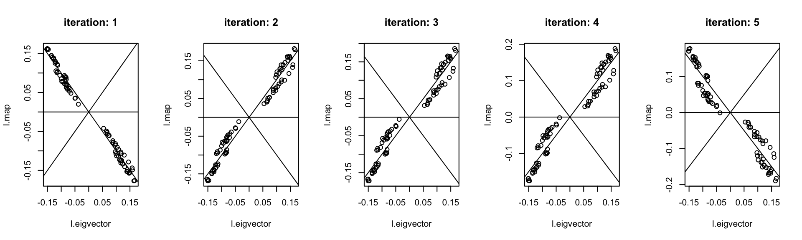
fit1 <- hEBMF(X=set.X, r=set.r, G='exp', fig.intermediate = TRUE, rand.init=TRUE)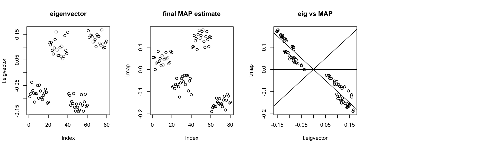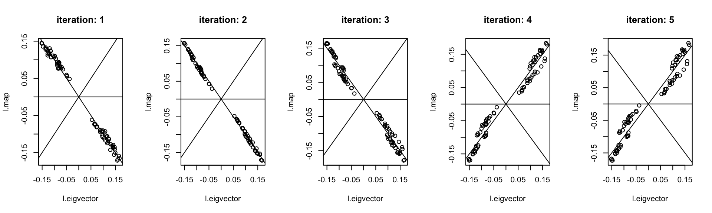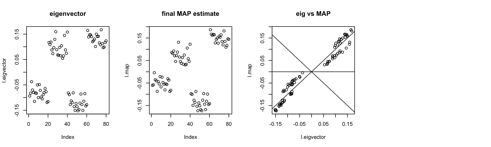
exp.mixfit2 <- hEBMF(X=set.X, r=set.r, G='exp.mix', fig.intermediate = TRUE)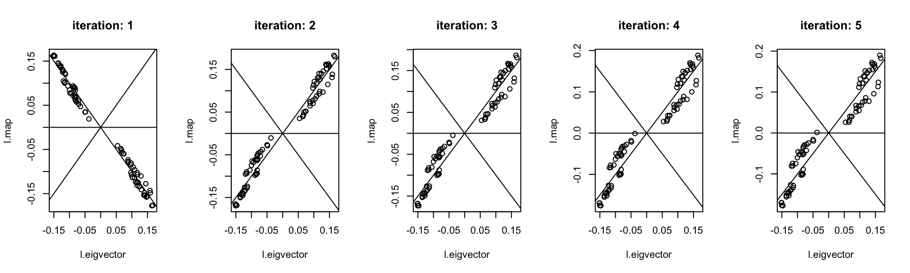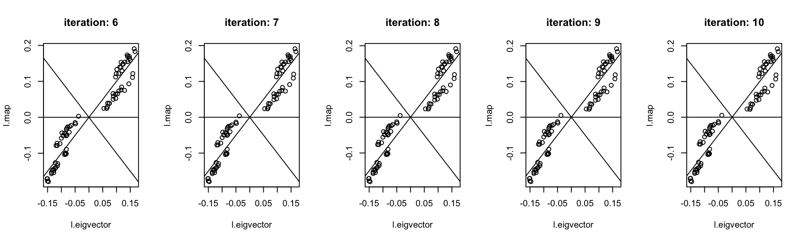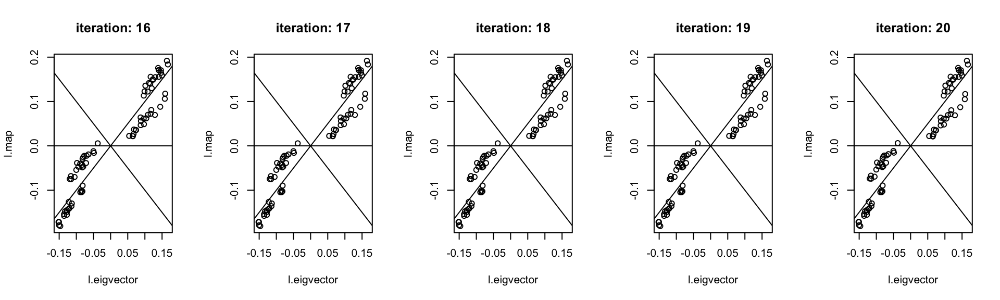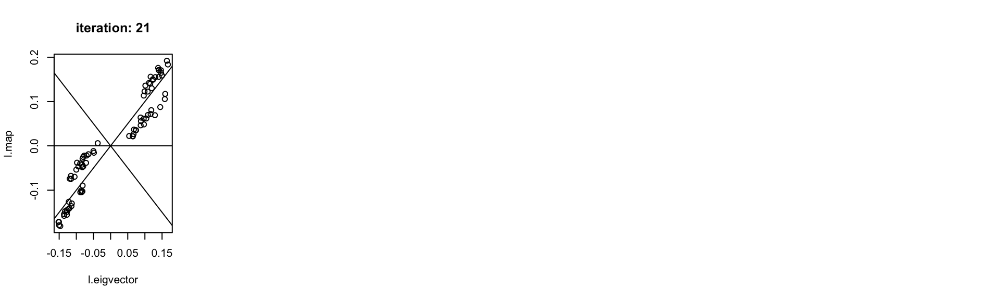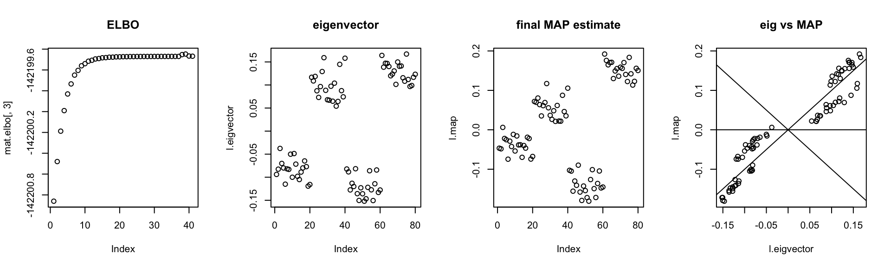
fit2 <- hEBMF(X=set.X, r=set.r, G='exp.mix', fig.intermediate = TRUE, rand.init=TRUE) 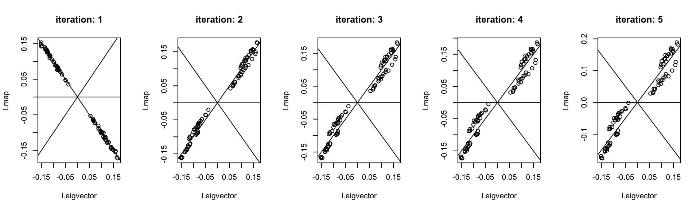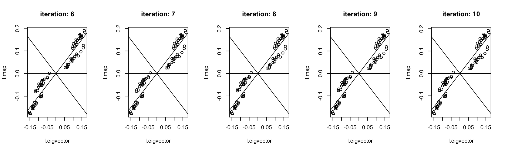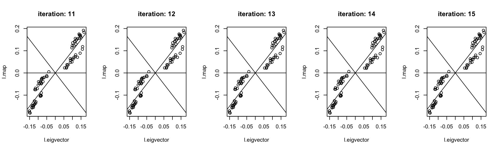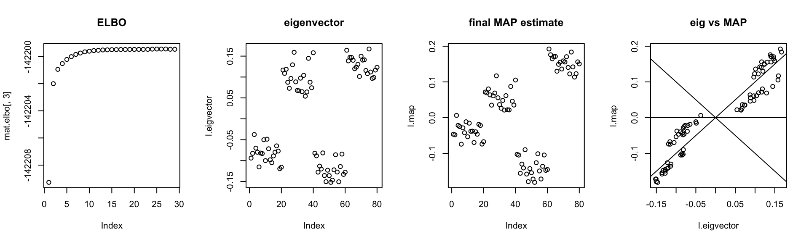
point.mixfit3 <- hEBMF(X=set.X, r=set.r, G='point.mix', fig.intermediate=TRUE)
fit3 <- hEBMF(X=set.X, r=set.r, G='point.mix', fig.intermediate=TRUE, rand.init=TRUE)
exp.mix+point.mixfit4 <- hEBMF(X=set.X, r=set.r, G='exp.mix+point.mix', fig.intermediate=TRUE)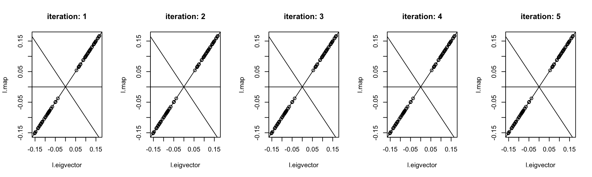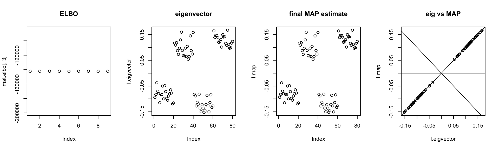
fit4 <- hEBMF(X=set.X, r=set.r, G='exp.mix+point.mix', fig.intermediate=TRUE, rand.init=TRUE)
hEBMF on toy data X2n_bset.r <- 1
set.X <- X2n_brand.init=TRUE is used to randomize initialization of the algorithm by permuting the eigenvalues.
expfit1 <- hEBMF(X=set.X, r=set.r, G='exp', fig.intermediate = TRUE)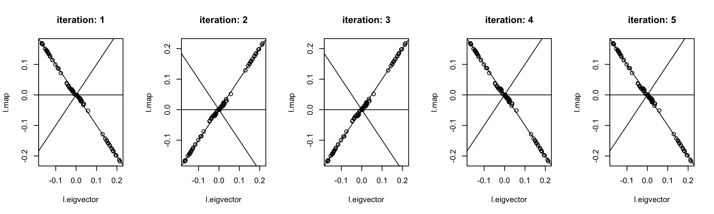
fit1 <- hEBMF(X=set.X, r=set.r, G='exp', fig.intermediate = TRUE, rand.init=TRUE)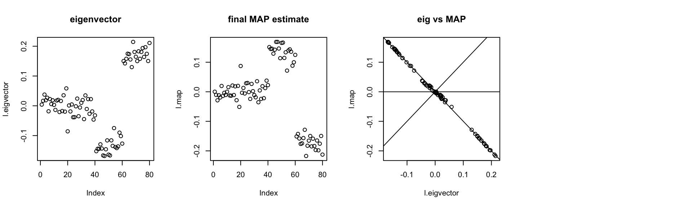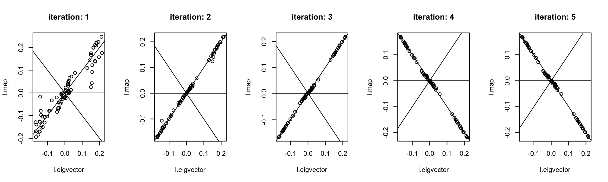
exp.mixfit2 <- hEBMF(X=set.X, r=set.r, G='exp.mix', fig.intermediate = TRUE)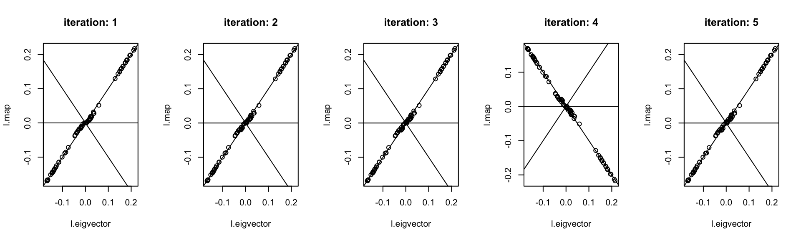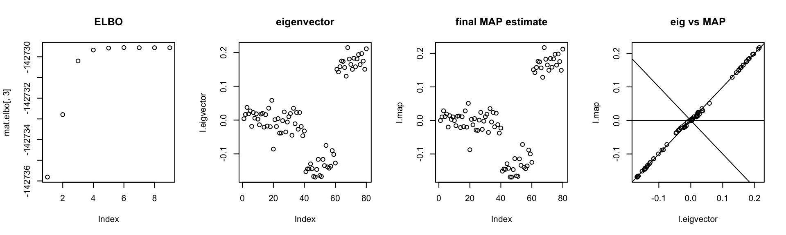
fit2 <- hEBMF(X=set.X, r=set.r, G='exp.mix', fig.intermediate = TRUE, rand.init=TRUE)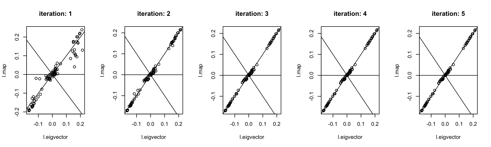
point.mixfit3 <- hEBMF(X=set.X, r=set.r, G='point.mix', fig.intermediate=TRUE)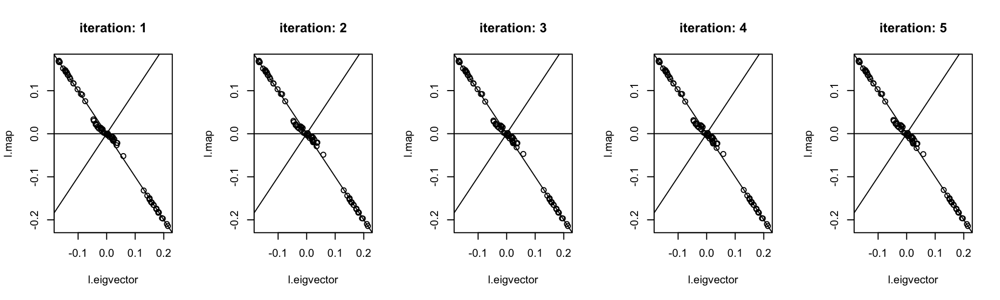
fit3 <- hEBMF(X=set.X, r=set.r, G='point.mix', fig.intermediate=TRUE, rand.init=TRUE)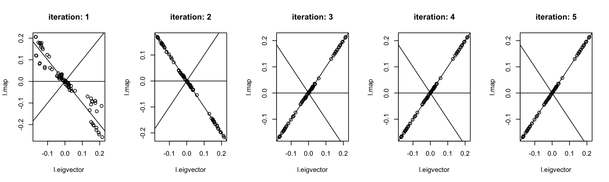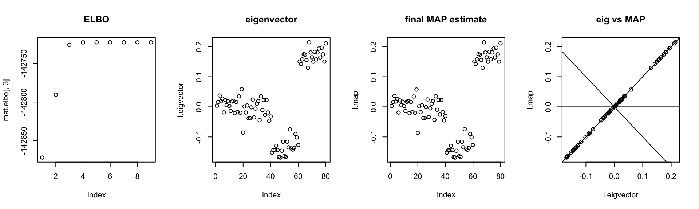
exp.mix+point.mixfit4 <- hEBMF(X=set.X, r=set.r, G='exp.mix+point.mix', fig.intermediate=TRUE)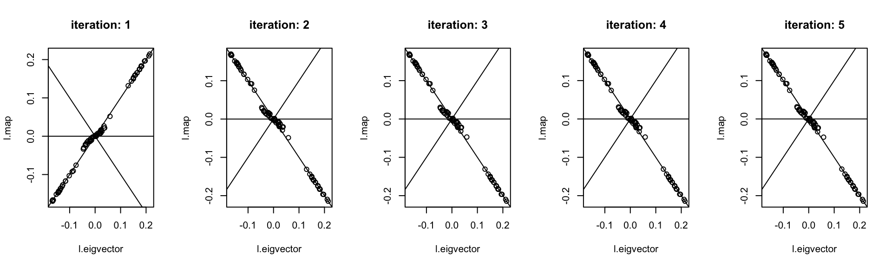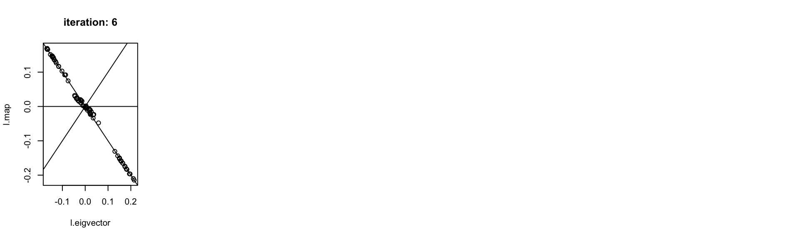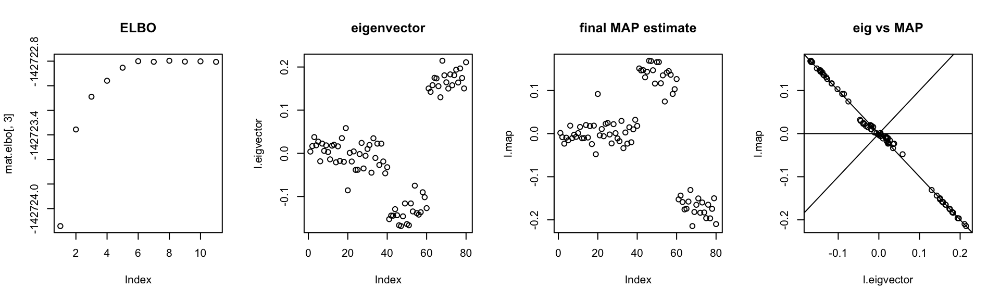
fit4 <- hEBMF(X=set.X, r=set.r, G='exp.mix+point.mix', fig.intermediate=TRUE, rand.init=TRUE)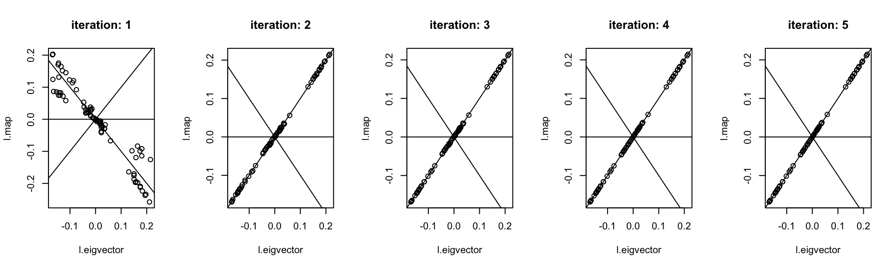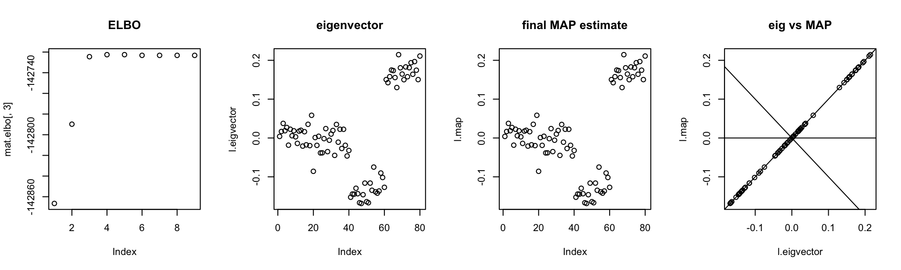
hEBMF on toy data X2set.r <- 2
set.X <- X2
expfit1 <- hEBMF(X=set.X, r=set.r, G='exp', fig.intermediate = TRUE)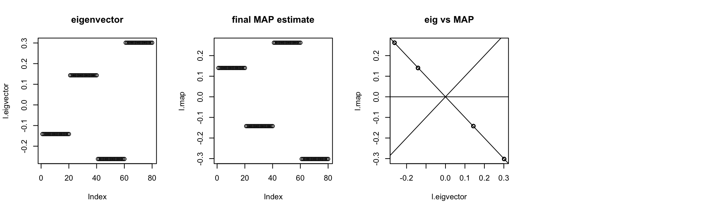
exp.mixfit2 <- hEBMF(X=set.X, r=set.r, G='exp.mix', fig.intermediate = TRUE)
point.mixfit3 <- hEBMF(X=set.X, r=set.r, G='point.mix', fig.intermediate=TRUE)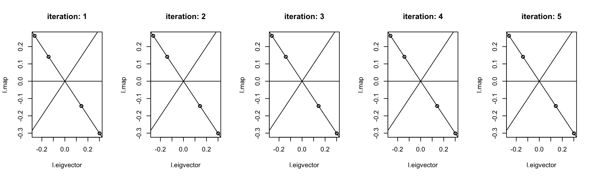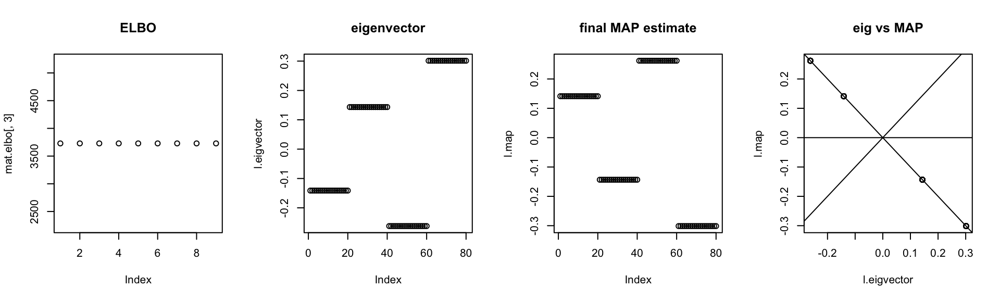
exp.mix+point.mixfit4 <- hEBMF(X=set.X, r=set.r, G='exp.mix+point.mix', fig.intermediate=TRUE)
More toy data
more.toy <- function(seed.no){
set.seed(seed.no)
# create X
p = 1000
n = 20
f = list()
for(i in 1:6){
f[[i]] = rnorm(p)
}
X =matrix(0,ncol=4*n, nrow=p)
X[,1:(2*n)] = f[[1]]
X[,(2*n+1):(4*n)] = f[[2]]
X[,1:n] = X[,1:n]+f[[3]]
X[,(n+1):(2*n)] = X[,(n+1):(2*n)]+f[[4]]
X[,(2*n+1):(3*n)] = X[,(2*n+1):(3*n)] + f[[5]]
X[,(3*n+1):(4*n)] = X[,(3*n+1):(4*n)] + f[[6]]
X.svd = svd(X)
# create X2
X2 = X- X.svd$u[,1:2] %*% diag(X.svd$d[1:2]) %*% t(X.svd$v[,1:2])
# take transpose
X2 <- t(X2)
mat.X <- X2 + rnorm(4*20*1000, sd=3)
obj.fit1 <- hEBMF(X=mat.X, r=1, G='exp.mix', fig.final=FALSE)
obj.fit2 <- hEBMF(X=mat.X, r=1, G='point.mix', fig.final=FALSE)
obj.fit3 <- hEBMF(X=mat.X, r=1, G='exp.mix+point.mix', fig.final=FALSE)
par(mfrow=c(1,4))
plot(obj.fit1$l.eigvector, main='eigvector', ylab='eigenvector')
plot(obj.fit1$l.eigvector, obj.fit1$l.map, main='vs. exp.mix', ylab='map', xlab='eigvector');
abline(a=0, b=1); abline(a=0, b=-1); abline(a=0, b=0)
plot(obj.fit2$l.eigvector, obj.fit2$l.map, main='vs. point.mix', ylab='map', xlab='eigvector');
abline(a=0, b=1); abline(a=0, b=-1); abline(a=0, b=0)
plot(obj.fit3$l.eigvector, obj.fit3$l.map, main='vs. exp.mix+point.mix', ylab='map', xlab='eigvector');
abline(a=0, b=1); abline(a=0, b=-1); abline(a=0, b=0)
}
773more.toy(seed.no=773)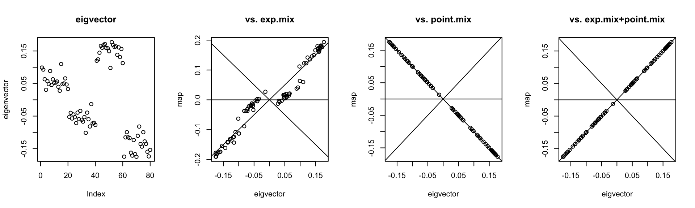
312more.toy(seed.no=312)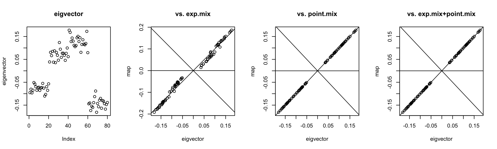
1more.toy(seed.no=1)
2more.toy(seed.no=2)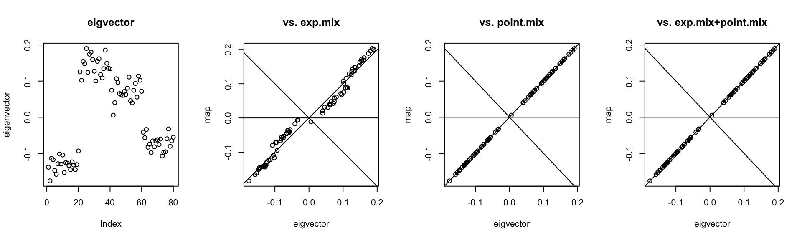
3more.toy(seed.no=3)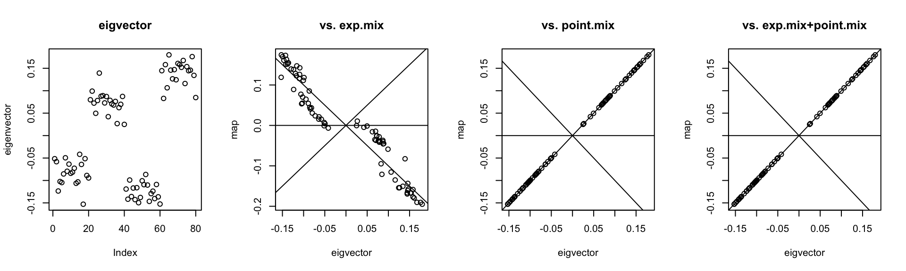
4more.toy(seed.no=4)Warning in mixsqp::mixsqp(L, control = list(verbose = FALSE)): One or more
columns of "L" are all zeros; solution entries associated with these columns are
trivially zero
Warning in mixsqp::mixsqp(L, control = list(verbose = FALSE)): One or more
columns of "L" are all zeros; solution entries associated with these columns are
trivially zero
Warning in mixsqp::mixsqp(L, control = list(verbose = FALSE)): One or more
columns of "L" are all zeros; solution entries associated with these columns are
trivially zero
Warning in mixsqp::mixsqp(L, control = list(verbose = FALSE)): One or more
columns of "L" are all zeros; solution entries associated with these columns are
trivially zero
Warning in mixsqp::mixsqp(L, control = list(verbose = FALSE)): One or more
columns of "L" are all zeros; solution entries associated with these columns are
trivially zero
Warning in mixsqp::mixsqp(L, control = list(verbose = FALSE)): One or more
columns of "L" are all zeros; solution entries associated with these columns are
trivially zero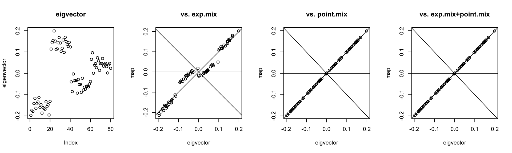
5more.toy(seed.no=5)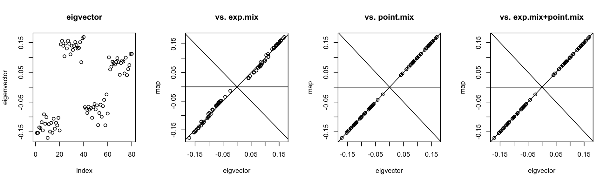
6more.toy(seed.no=6)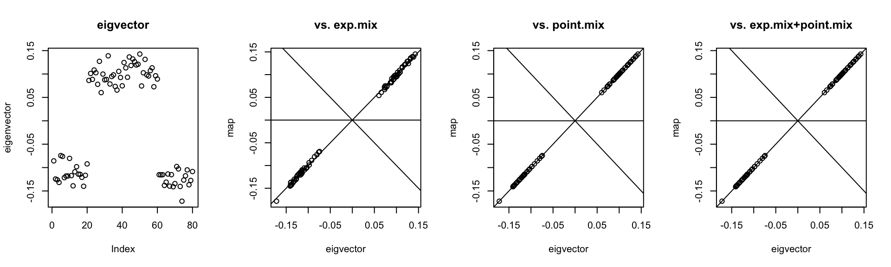
7more.toy(seed.no=7)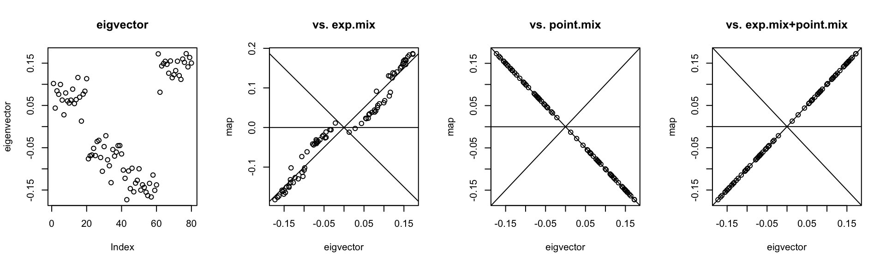
8more.toy(seed.no=8)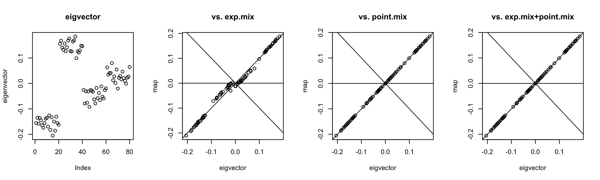
9more.toy(seed.no=9)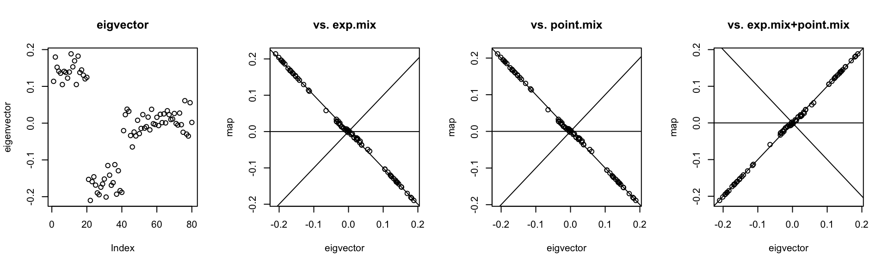
10more.toy(seed.no=10)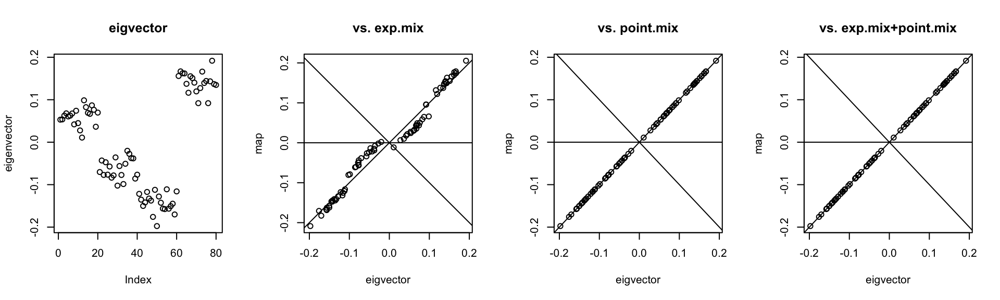
sessionInfo()R version 4.0.2 (2020-06-22)
Platform: x86_64-apple-darwin17.0 (64-bit)
Running under: macOS 10.16
Matrix products: default
BLAS: /Library/Frameworks/R.framework/Versions/4.0/Resources/lib/libRblas.dylib
LAPACK: /Library/Frameworks/R.framework/Versions/4.0/Resources/lib/libRlapack.dylib
locale:
[1] en_US.UTF-8/en_US.UTF-8/en_US.UTF-8/C/en_US.UTF-8/en_US.UTF-8
attached base packages:
[1] stats graphics grDevices utils datasets methods base
other attached packages:
[1] workflowr_1.6.2
loaded via a namespace (and not attached):
[1] Rcpp_1.0.5 rstudioapi_0.11 whisker_0.4 knitr_1.30
[5] magrittr_1.5 lattice_0.20-41 R6_2.4.1 rlang_0.4.7
[9] stringr_1.4.0 tools_4.0.2 grid_4.0.2 xfun_0.18
[13] irlba_2.3.3 git2r_0.27.1 htmltools_0.5.0 ellipsis_0.3.1
[17] rprojroot_1.3-2 yaml_2.2.1 digest_0.6.25 tibble_3.0.3
[21] lifecycle_0.2.0 crayon_1.3.4 Matrix_1.2-18 mixsqp_0.3-43
[25] later_1.1.0.1 vctrs_0.3.4 promises_1.1.1 fs_1.5.0
[29] glue_1.4.2 evaluate_0.14 rmarkdown_2.4 stringi_1.5.3
[33] compiler_4.0.2 pillar_1.4.6 backports_1.1.10 httpuv_1.5.4
[37] pkgconfig_2.0.3


 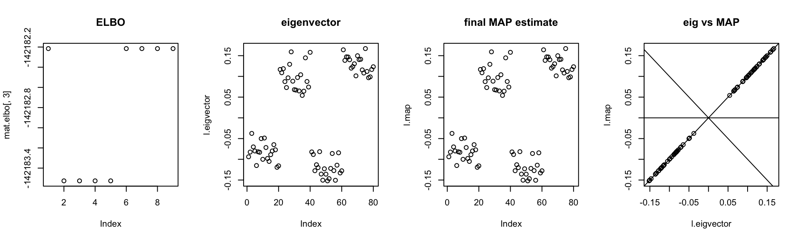
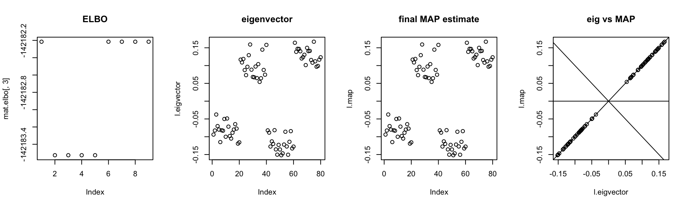 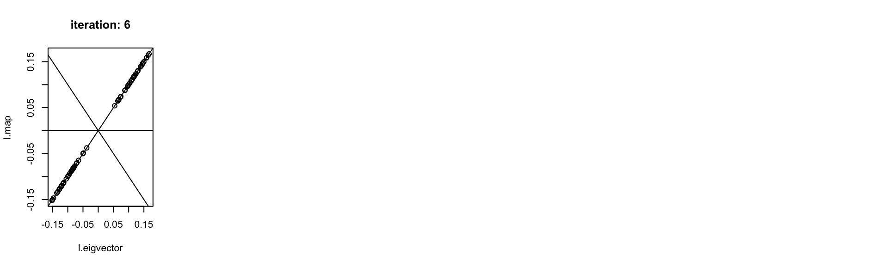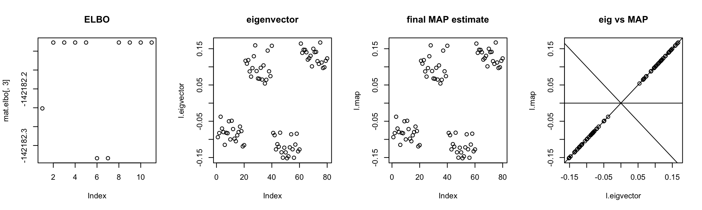
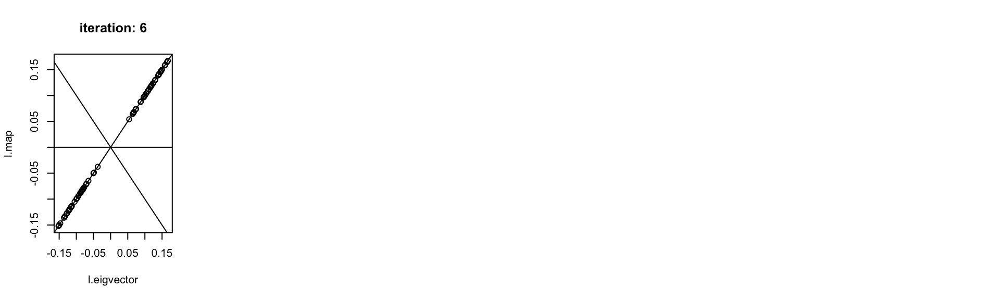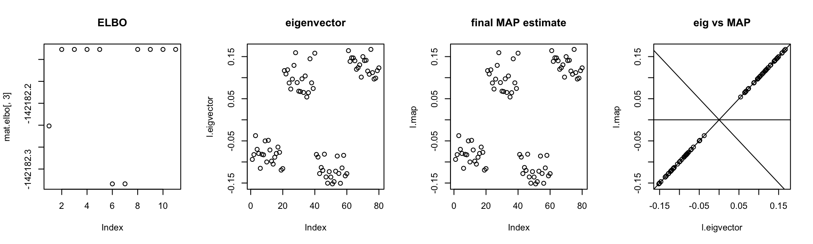 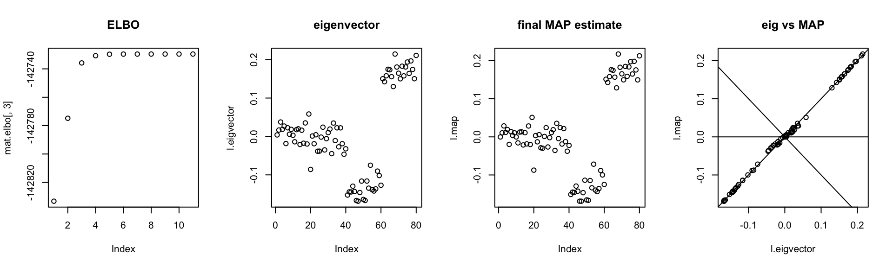
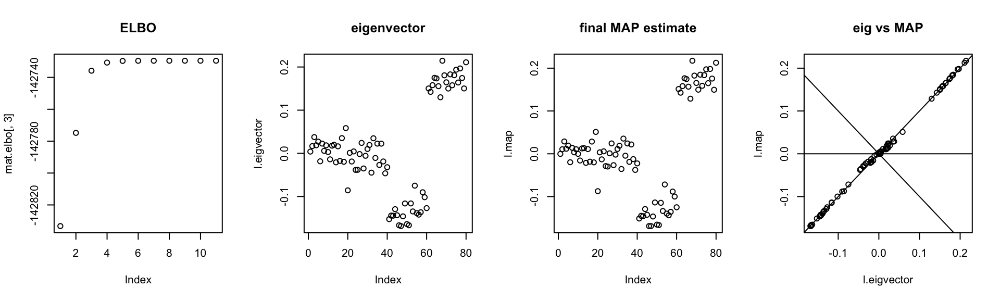